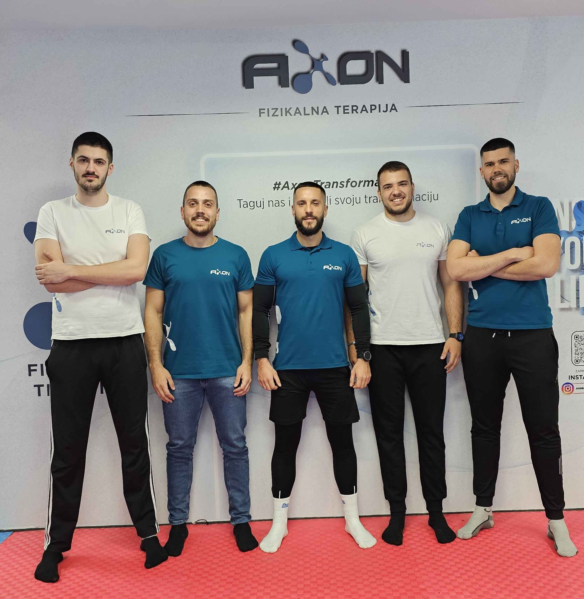
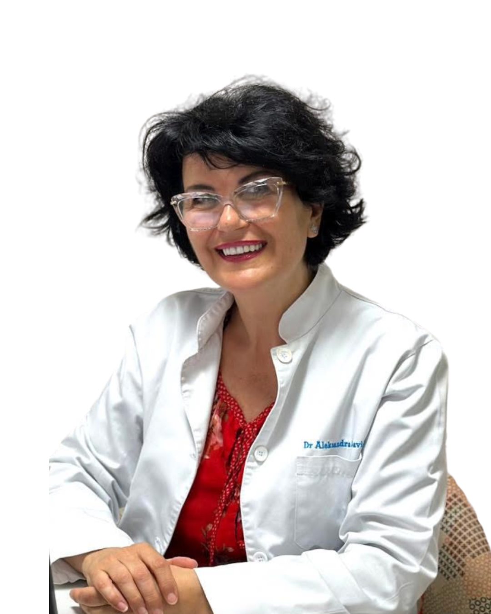
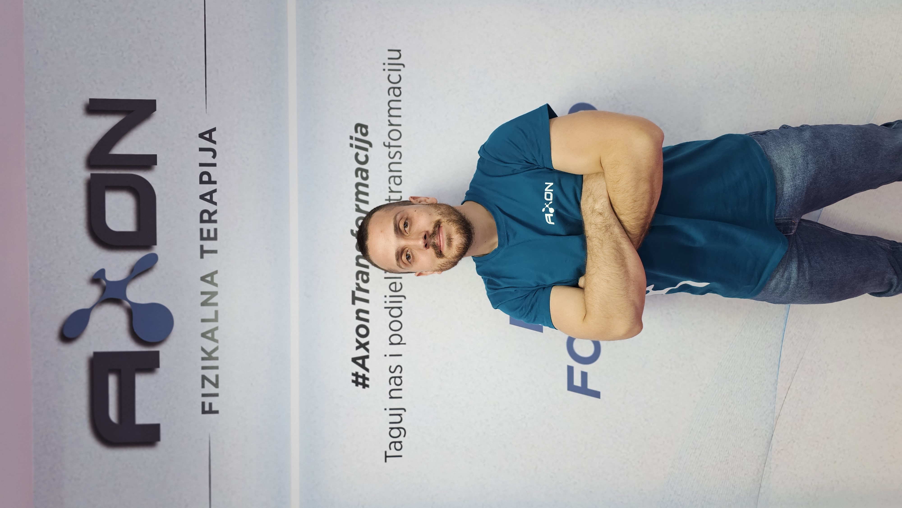
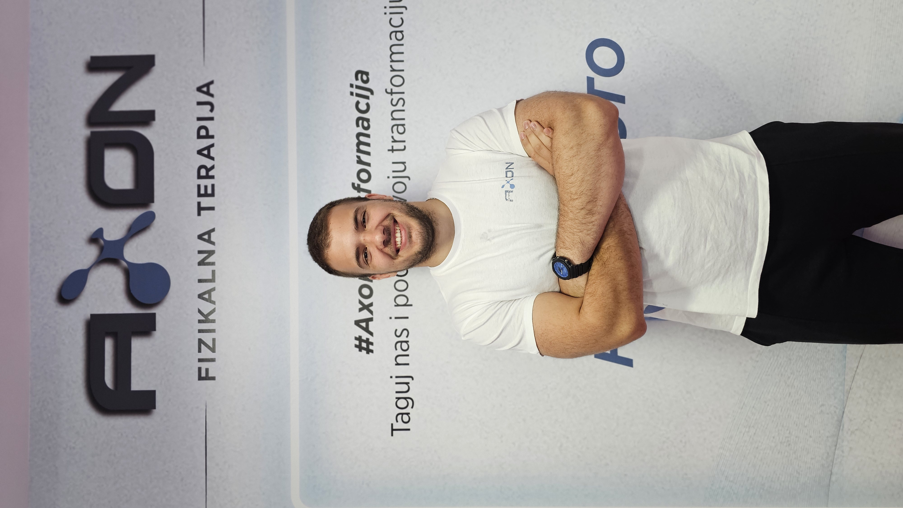

O Nama
Upoznajte tim koji stoji iza AXON klinike – stručnjaci predani vašem zdravlju i oporavku
Naša priča i misija
AXON klinika za fizikalnu terapiju i rehabilitaciju osnovana je s jasnom vizijom: pružiti pacijentima u Crnoj Gori zdravstvenu njegu koja je na nivou evropskih standarda. Smještena u Podgorici, klinika okuplja stručan tim fizioterapeuta i specijalista posvećenih individualnom pristupu svakom pacijentu.
Naša misija je holistički pristup liječenju – razumijevanje ne samo fizičkih simptoma, već i životnog stila, ciljeva i potreba svakog pacijenta. Svaki plan terapije je individualno prilagođen, jer vjerujemo da svako tijelo zahtijeva poseban pristup. Pravi oporavak moguć je samo kada pacijent aktivno učestvuje u procesu liječenja, podržan stručnim timom koji ga prati na svakom koraku.
Vizija AXON-a je da postanemo vodeći centar fizikalne medicine u Crnoj Gori, kontinuiranim ulaganjem u edukaciju osoblja, nabavku moderne opreme i primjenu terapijskih protokola utemeljenih na najnovijim naučnim dostignućima.
Zakažite pregled
Naš tim stručnjaka
Iskusni specijalisti posvećeni vašem zdravlju i oporavku

Dr. Aleksandra Savić
Specijalista fizikalne medicine i rehabilitacijeDr. Aleksandra Savić
Specijalista fizikalne medicine i rehabilitacijeSpecijalista fizikalne medicine i rehabilitacije sa dugogodišnjim iskustvom u dijagnostici, liječenju i rehabilitaciji pacijenata različitih profila. Profesionalni put započela i usavršila u Beogradu, gdje je završila Medicinski fakultet i specijalizaciju iz fizikalne medicine i rehabilitacije.
U svom svakodnevnom radu posvećena je sveobuhvatnoj rehabilitaciji ortopedskih, reumatoloških, neuroloških i neurohirurških pacijenata u KCCG, kao i ranoj postoperativnoj rehabilitaciji.
Stručno se usavršavala u oblastima ortopedske i onkološke rehabilitacije, te tretmana limfedema. Završila je sertifikovani kurs manuelne limfne drenaže po metodi dr Voddera (Dr Vodder Academy), kao i Školu akupunkture (SUIM).

Srđan Mijović
Diplomirani fizioterapeut · ISST SCHROTH terapeutSrđan Mijović
Diplomirani fizioterapeut · ISST SCHROTH terapeutDiplomirani fizioterapeut i ISST SCHROTH terapeut, specijalizovan za tretman deformiteta kičmenog stuba, posebno skolioza.
Usavršavao se kroz edukacije SCHROTH metode, Dry Needling-a, Electric Needling-a, sportske medicine i HVLA manipulacija.
Posvećen individualnim tretmanima i rehabilitaciji pacijenata.

Marko Mićković
Diplomirani fizioterapeutMarko Mićković
Diplomirani fizioterapeutDiplomirani fizioterapeut, specijalizovan za rehabilitaciju pacijenata sa diskus hernijom, bolnim stanjima kičmenog stuba i problemima sa vrtoglavicama.
Iskustvo obuhvata sportsku, ortopedsku i neurološku rehabilitaciju. Završio je dodatne edukacije iz fizioterapije kod vertiga, iThrust HVLA manipulacija, akupunkture i cupping terapije.
Cilj mu je da svakom pacijentu poboljša kvalitet života.

Đorđe Barović
Diplomirani fizioterapeutĐorđe Barović
Diplomirani fizioterapeutFizioterapeut posvećen unapređenju zdravlja, funkcionalnosti i sportskih performansi svojih pacijenata.
Iskustvo je sticao radeći sa sportistima svih nivoa, gdje je razvio vještine u procjeni, rehabilitaciji i pripremi sportista za povratak na teren.
Završio je CFSC edukaciju (Certified Functional Strength Coach) i specijalizovao se za limfnu drenažu, što mu omogućava efikasno kombinovanje treninga, oporavka i manuelnih tehnika.

Andrija Golubović
Fizioterapeut · TrenerAndrija Golubović
Fizioterapeut · TrenerSpecijalizovan je za sportske masaže, oporavak nakon povreda, kao i grupne treninge koji podižu snagu, kondiciju i motivaciju na viši nivo.
Ono što ga izdvaja jeste profesionalan i posvećen pristup svakom klijentu, energija koju prenosi na druge i rezultati koji govore sami za sebe.
Naša klinika
Moderno opremljen prostor prilagođen svakom pacijentu
Naše vrijednosti
Principi koji vode svaki naš korak u radu s pacijentima
Stručnost
Kontinuirano ulaganje u edukaciju i praćenje najnovijih dostignuća medicinske nauke.
Empatija
Svaki pacijent je jedinstven. Slušamo, razumijemo i prilagođavamo pristup individualnim potrebama.
Integritet
Transparentnost u dijagnozi, tretmanu i troškovima. Gradimo povjerenje temeljeno na poštenju.
Inovacija
Usvajamo najsavremenije terapijske metode i opremu kako bismo osigurali najbolje rezultate.